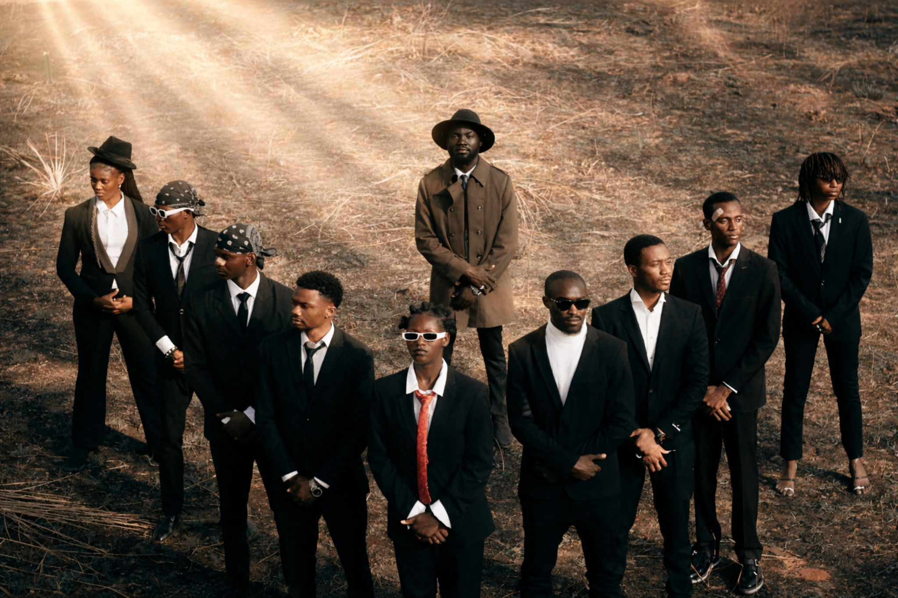
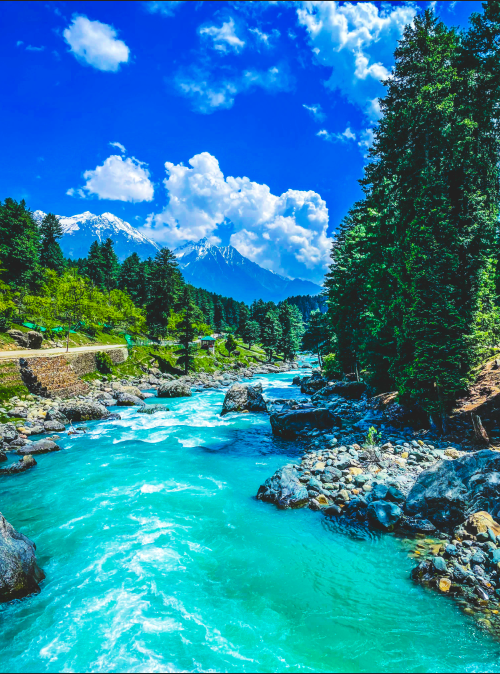
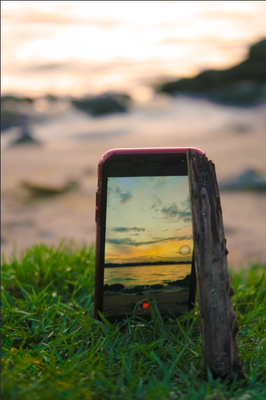
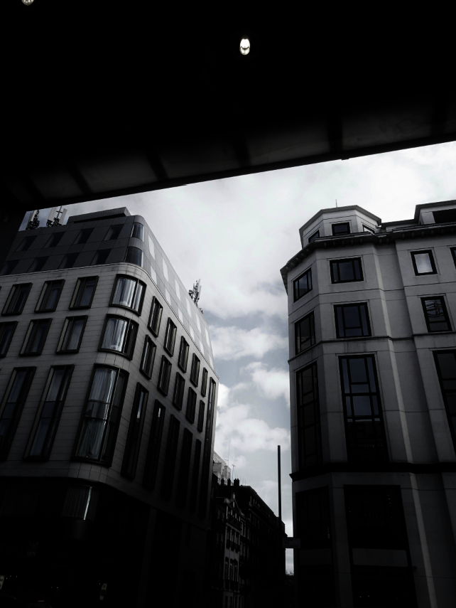
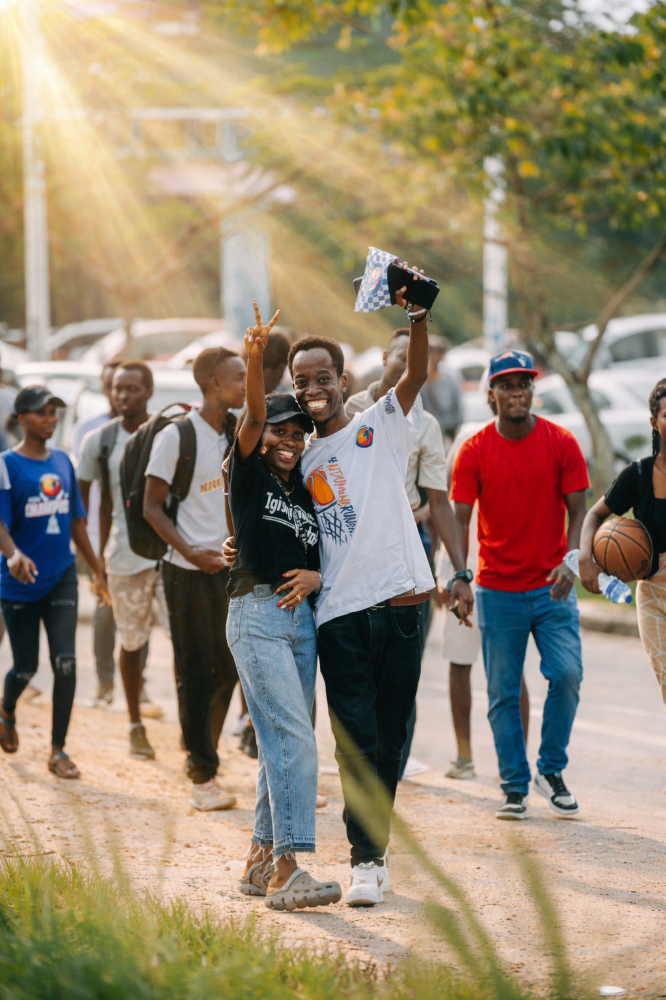
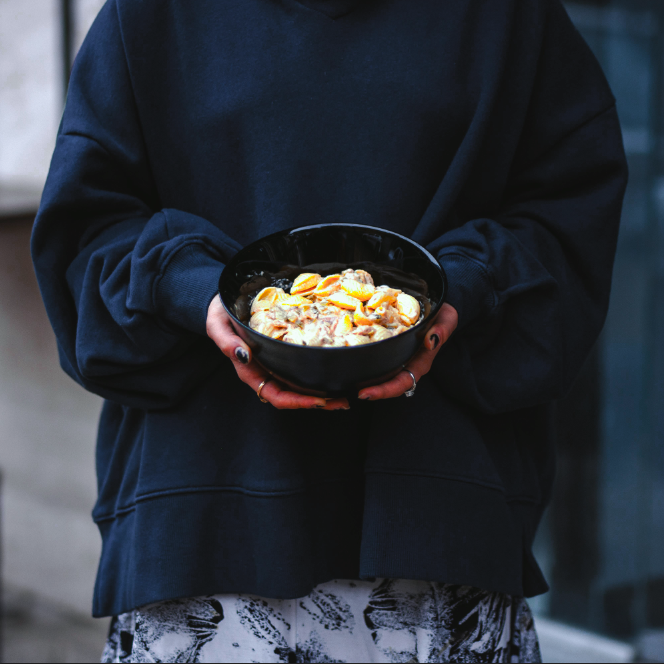

01PHOTO EDITING
Urban Perspective
Enhanced lighting, contrast and color to create a clean cinematic look.
PHOTO • VIDEO • CONTENT
I'm Pavel, an 11th-grade student and creative editor focused on photo editing, video editing and social-media content.
SELECTED WORK
A selection of my photo editing and visual content work, focused on color, lighting and creative presentation.
Enhanced lighting, contrast and color to create a clean cinematic look.

Color grading and tonal adjustments designed to give the image a cinematic atmosphere.

Natural colors, enhanced detail and balanced contrast bring the landscape to life.

Portrait retouching and color adjustments combined with a nostalgic visual style.

Warm tones, controlled highlights and contrast create a strong sunset aesthetic.

A monochrome treatment focused on contrast, structure and the atmosphere of the city.

Lighting and color adjustments create a balanced and engaging street photograph.

Enhanced colors and atmosphere while keeping the natural character of the scene.

Lighting, color and composition adjustments designed to make the subject stand out.
WHAT I DO
Color grading, lighting fixes, retouching and polished social-ready photos.
Short-form videos, promotional edits, transitions, subtitles and pacing.
Visual concepts and social content designed around your audience and brand.
A LITTLE ABOUT ME
I'm an 11th-grade student building my skills through real projects and personal creative work. I enjoy taking ordinary footage or photos and turning them into something that feels intentional, clean and engaging.
My focus is on improving every project, learning new techniques and helping creators and small businesses present themselves better online.
HAVE A PROJECT?
Have photos that need work, a video that needs editing, or content you want to create? Get in touch.
Let's connect! ↗